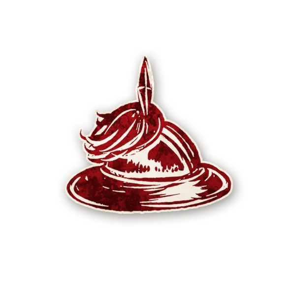
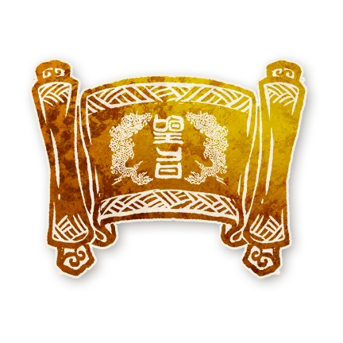

山雨欲来
合集说明
山雨欲来是华灯初上国风角色合集的第二季。该合集将会收录在华灯初上第一季角色征集活动中投稿但没有收录进第一季的角色，以及接下来在第二季角色征集活动中的优秀设计。
在角色合集的内容未最终确定前，角色的能力可能会发生变动。
下列角色将优先进入测试阶段，欢迎大家直接点击下方的在线表格链接进行反馈，我们会每月更新一批角色并更新反馈表。同样也欢迎大家将详细复盘情况或建议发送至邮箱：yixingkaoti@163.com。期待你的来信！
反馈收集
山雨欲来角色包印象反馈收集表，欢迎大家畅所欲言：
第一批测试角色收集意见截止时间：2025年11月30日
第二批测试角色收集意见截止时间：2026年1月31日
镇民
外来者
爪牙
恶魔
山雨欲来-体验剧本
- 第二期
- 十三行（作者：摸鱼）
- 第四期
- 金戈铁马V2.0（作者：鸭镇）
镇民
 秉笔：如果你在白天死亡，当晚你会得知一名善良玩家。如果你在夜晚死亡，当晚你会得知一名邪恶玩家。（创意来源：墨兰花开）
秉笔：如果你在白天死亡，当晚你会得知一名善良玩家。如果你在夜晚死亡，当晚你会得知一名邪恶玩家。（创意来源：墨兰花开）
宠妃：每局游戏限一次，说书人会在关于你的事情上打破规则。随后，你会秘密得知说书人为此做了什么。（创意来源：玉露玉某）
 道士：每个夜晚*，你要选择一名玩家：如果你选中了恶魔，你死亡，然后他醉酒直到下个黎明。（创意来源：emptyset）
道士：每个夜晚*，你要选择一名玩家：如果你选中了恶魔，你死亡，然后他醉酒直到下个黎明。（创意来源：emptyset）
 方士：在你的首个夜晚，你要选择一个数字。在该数字对应的那一个夜晚，你会得知对应数量的在场角色。（创意来源：言荒 & 17）
方士：在你的首个夜晚，你要选择一个数字。在该数字对应的那一个夜晚，你会得知对应数量的在场角色。（创意来源：言荒 & 17）
 狸猫：每个夜晚*，你要选择一名玩家：如果他是善良角色且当晚被邪恶角色杀死，你和他交换角色。（创意来源：田泼茶）
狸猫：每个夜晚*，你要选择一名玩家：如果他是善良角色且当晚被邪恶角色杀死，你和他交换角色。（创意来源：田泼茶）
 掮客：每个夜晚，你要选择两名存活玩家：如果他们阵营相同，今晚任何玩家使用自身能力选择他们之一作为目标时，改为选中另一名玩家。（创意来源：CC2Irving）
掮客：每个夜晚，你要选择两名存活玩家：如果他们阵营相同，今晚任何玩家使用自身能力选择他们之一作为目标时，改为选中另一名玩家。（创意来源：CC2Irving）
提刑官：在你首次提名玩家后，你会在当晚得知他的角色。恶魔会被你的能力当作善良角色。 （创意来源：非羽卒）
巡察：每个夜晚*，你要选择两个善良角色（与上个夜晚都不同）：如果他们都存活，他们当晚不会死亡。（创意来源：刘中奇）
驿使：每个白天，你可以公开声明一个角色。在当晚，你会得知该角色是否在场。如果你得知过是和否，你失去此能力。（创意来源：新仔辣椒酱）
 引路人：每个夜晚，你要选择除你以外的至多三名玩家：你会得知今晚是否有邪恶玩家的能力选择或影响了他们之中的玩家。（创意来源：Richard Black）
引路人：每个夜晚，你要选择除你以外的至多三名玩家：你会得知今晚是否有邪恶玩家的能力选择或影响了他们之中的玩家。（创意来源：Richard Black）
 鸩：每局游戏限一次，在夜晚时*，你可以选择一个镇民角色：如果他在场，他中毒并死亡。（创意来源：曳舞影）
鸩：每局游戏限一次，在夜晚时*，你可以选择一个镇民角色：如果他在场，他中毒并死亡。（创意来源：曳舞影）
 知府：每个夜晚*，你会得知今天是否有非镇民且非旅行者的玩家死亡。（创意来源：惊翎过鸿隙）
知府：每个夜晚*，你会得知今天是否有非镇民且非旅行者的玩家死亡。（创意来源：惊翎过鸿隙）
戏子（改）：其他善良玩家醉酒（旅行者除外），你们互相认识且无法转变阵营，对调胜负结果，即使你失去能力。（创意来源：米示有岸）（创意修改：Richard Black）
外来者
酒保：与你邻近的善良玩家（旅行者除外）之一醉酒，即使你死于处决。（创意来源：Monster祁阳）
 入殓师：如果你提名了恶魔且他死于这次处决，你会变成那个邪恶的恶魔。当剩余存活玩家小于等于四人时（旅行者除外），你失去能力。（创意来源：Mtyj）
入殓师：如果你提名了恶魔且他死于这次处决，你会变成那个邪恶的恶魔。当剩余存活玩家小于等于四人时（旅行者除外），你失去能力。（创意来源：Mtyj）
爪牙
蛊雕：每个夜晚，你会得知顺时针方向上的下一名存活的镇民玩家的角色，他中毒且可能被当作邪恶的蛊雕，直到下个黄昏。每局游戏限一次，在夜晚时，你可以改变方向。（创意来源：努力努力）
 画皮：在你的首个夜晚，你要选择一名存活玩家：他死亡但会被当作存活。当他下一次即将死亡时，他重生，随后你重获能力。（创意来源：Zack）
画皮：在你的首个夜晚，你要选择一名存活玩家：他死亡但会被当作存活。当他下一次即将死亡时，他重生，随后你重获能力。（创意来源：Zack）

 孟婆：每个夜晚*，你可以选择一名存活玩家，他要二选一：1）能力描述修改为“你没有能力。”；2）死亡并保留能力直到下个黄昏。（创意来源：卷饼）
孟婆：每个夜晚*，你可以选择一名存活玩家，他要二选一：1）能力描述修改为“你没有能力。”；2）死亡并保留能力直到下个黄昏。（创意来源：卷饼）
酿酒师：每个夜晚，你要选择一个镇民角色：当他下一次通过自身能力获取信息时，改为得知你给出的信息。（创意来源：苏通染）
恶魔
 暴君：每个夜晚*，你要选择一名玩家：他死亡。如果你杀死了与爪牙邻近的玩家，下个夜晚你可以选择至多两名玩家：他们死亡。（创意来源：咖啡）
暴君：每个夜晚*，你要选择一名玩家：他死亡。如果你杀死了与爪牙邻近的玩家，下个夜晚你可以选择至多两名玩家：他们死亡。（创意来源：咖啡）
典狱长：每个夜晚，你要选择至多三名玩家：如果明天白天他们之一死于处决，上次被你选择的其他玩家会在当晚死亡。否则，当晚他们之中会有一名玩家死亡。（创意来源：陈恒）
姑获鸟：每个夜晚*，你要选择一名玩家：他死亡。每局游戏限一次，当爪牙死于处决时，你可能会获得他的能力。（创意来源：老猎人）
 奸佞：每个夜晚*，你要选择一名玩家：他死亡。爪牙在其死亡的当晚要选择一名玩家：如果他是善良的，他死亡。（创意来源：喷泉）
奸佞：每个夜晚*，你要选择一名玩家：他死亡。爪牙在其死亡的当晚要选择一名玩家：如果他是善良的，他死亡。（创意来源：喷泉）
传奇角色

第一季角色·改-说明
由于在海外地区的角色发行计划，可能会导致第一季的华灯角色从“中文限定”变成“全球通用”的粉丝设计+官方发行角色（也就是说这些角色的会比华灯更加“偏官方角色”一些），并使得原有的角色能力发生变化。
此外，也可能会有一部分体验不好的第一季角色，在修改后重新出现。
这些情况发生后，钟楼百科、在线魔典、剧本工具会对同一个角色的新旧两个版本都予以保留。但针对角色的能力交互、相克规则等各方面的内容维护，则只会对最新版本的角色进行维护，不再会对老角色进行维护。老角色的相克规则也只会出现在角色本身的页面中。
此外，还有一部分优秀的海外自制角色，其本身的设计是与华灯的要求兼容的，这些角色也会想办法与作者沟通，拿到授权并以作者的名字作为创意来源。